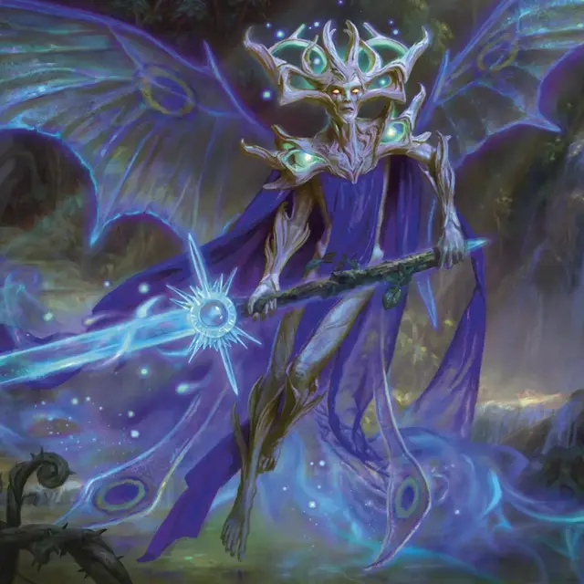

Добрый страж высших фей
High Fae Kindguard
Средняя Фея, любое мировоззрение

Класс Доспеха 17 (природный доспех)
Хиты 156 (24к8 + 48)
Скорость 40 футов, летая 60 футов (парит)
| мод | спас | ||
|---|---|---|---|
| СИЛ | 22 | +6 | +10 |
| ЛОВ | 23 | +6 | +10 |
| ТЕЛ | 15 | +2 | +2 |
| мод | спас | ||
|---|---|---|---|
| ИНТ | 14 | +2 | +2 |
| МДР | 17 | +3 | +3 |
| ХАР | 13 | +1 | +1 |
Навыки Акробатика +10, Атлетика +10, Восприятие +7
Сопротивление урону дробящий, колющий, рубящий от немагических атак
Чувства тёмное зрение 60 футов, пассивное Восприятие 17
Языки Общий, Сильван
Опасность 12 (8400 опыта)
Бонус мастерства +4
Особенности
Увёртливость. Если высшая фея дееспособна и подвергается эффекту, который позволяет ей сделать спасбросок Ловкости, чтобы получить только половину урона, вместо этого при успехе она не получает урона и получает только половину урона при провале.
Сопротивление магии. Высшая фея совершают с преимуществом спасброски от заклинаний и других магических эффектов.
Действия
Мультиатака. Высшая фея совершает две атаки Клинком фей и использует Опрокидывающий финт.
Клинок фей. . Рукопашная атака оружием: +10 к попаданию, досягаемость 10 фт., одна цель. Попадание: 20 (4к6 + 6) урона силовым полем, а скорость цели снижается на 10 футов до минимальной скорости в 5 футов. Уменьшение длится до начала следующего хода высшей феи.
Опрокидывающий финт. Целью высшей феи становится одно видимое ей существо Большого размера или меньше, в пределах 10 футов от нее. Цель должна преуспеть в спасброске Ловкости Сл 18, иначе будет сбита с ног.
Бонусные действия
Стремительный полет. Высшая фея перемешается на свою скорость не провоцируя атак.
Реакции
Парирование и ответный удар. Высшая фея добавляет +4 к своему КД против одного броска рукопашной атаки, которая может попасть по ней, при условии, что она может видеть атакующего. После того, как атака попала или промахнулась, высшая фея совершает одну атаку Клинком фей против атакующего.
Описание
«Добрый Господь не просто так приглашает их ко двору. Я предлагаю вам принять это».
— Гвиддион, посланник Талиона
Добрые стражи высших фей веками совершенствовали свое боевое мастерство, двигаясь со скоростью и грацией, которые другие только могут себе представить. Их высокий рост, большие крылья, сложные рога и массивное оружие придают им поистине устрашающий вид.
Самые доверенные добрые стражи высших фей служат непосредственно Талиону, Доброму Лорду. Девять раз по девять раз эти высшие феи давали обязательную клятву защищать Доброго Лорда, каждый раз укалывая руку веткой боярышника, чтобы скрепить клятву.
Высшие феи
Нестареющие и бесчеловечные высшие феи — старейшие существа Элдраина, олицетворяющие природное великолепие и опасность дикой природы. Высшие феи не уважают смертные ценности чести и закона, но, действуют по собственным нерушимым правилам: подарки всегда должны быть возвращены, обещания должны соблюдаться, и никогда не следует говорить откровенную ложь (хотя неверное направление и загадки всегда приветствуются). Чтобы развлечься на протяжении долгих столетий своей жизни, высшие феи часто прибегают к обманам и другим сложным остроумным играм друг против друга.
Большинство высших феи остаются уединёнными глубоко в дебрях Элдраина. Они черпают силу из пятнышек света, встречающихся в дебрях, и используют свою врожденную магию иллюзий для усиления и украшения своего оружия.
Высшими феями управляет Талион, Добрый Лорд. Талион столь же странен, древен и непостоянен, как дебри Элдраина, и Добрый Лорд требует от последователей верности и уважения. Несмотря на суровую манеру поведения, Добрый Лорд также известен тем, что следует таинственным прихотям и путешествует в самые дальние уголки Элдраина из-за ненасытного любопытства.